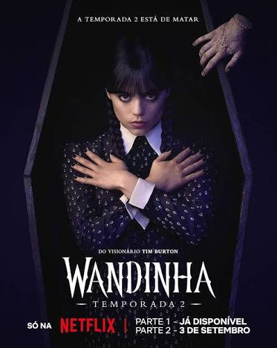
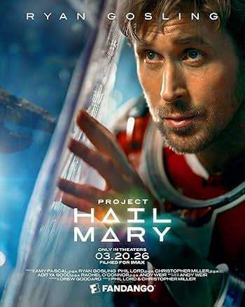
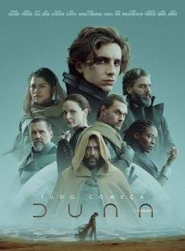
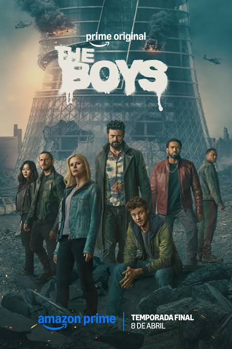
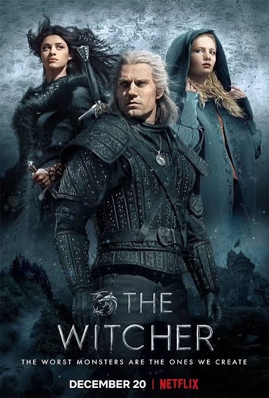

❤️ Gostos, avaliações e comentários são guardados apenas neste navegador e dispositivo. Não são partilhados com outros visitantes. Evita escrever informações pessoais.
1. WANDINHA

Género: Mistério, Comédia e Fantasia
Sinopse: Wandinha Addams é uma jovem inteligente, misteriosa e com uma personalidade bastante diferente. Depois de ser enviada para a Academia Nunca Mais, uma escola para jovens com habilidades especiais, começa a investigar uma série de acontecimentos estranhos que estão a assustar a região. Enquanto tenta descobrir a verdade, Wandinha conhece novos amigos, enfrenta rivalidades, descobre segredos antigos e começa a compreender melhor as suas próprias capacidades. Entre mistérios, visões e situações inesperadas, a sua passagem pela academia transforma-se numa aventura cheia de surpresas.
Por que assistir? Uma história cheia de mistério, humor, personagens interessantes e acontecimentos inesperados.
💬 Comentários
2. O PROJETO HAIL MARY

Género: Ficção científica, Aventura e Mistério
Sinopse: Ryland Grace acorda sozinho numa nave espacial, muito longe da Terra, sem conseguir recordar quem é nem como chegou até ali. Aos poucos, recupera as suas memórias e descobre que foi enviado numa missão extraordinária para investigar uma ameaça que pode colocar em perigo a sobrevivência da humanidade. Com poucos recursos e diante de desafios científicos aparentemente impossíveis, precisa de utilizar os seus conhecimentos, inteligência e capacidade de improvisação para encontrar uma solução. Durante a missão, uma descoberta inesperada poderá mudar completamente o rumo da sua viagem.
Por que assistir? Uma aventura espacial que combina ciência, mistério, inteligência e descobertas surpreendentes.
💬 Comentários
3. THE LAST OF US
Género: Drama, Ficção científica e Suspense
Sinopse: Num mundo devastado por uma pandemia que transformou profundamente a sociedade, os sobreviventes tentam reconstruir as suas vidas em meio ao medo, à incerteza e à falta de segurança. Joel, um homem marcado por experiências dolorosas, recebe a missão de acompanhar Ellie, uma adolescente que poderá representar uma esperança para o futuro da humanidade. Juntos, atravessam cidades abandonadas e territórios perigosos, encontrando pessoas com diferentes intenções e enfrentando decisões difíceis. Durante a viagem, desenvolvem uma relação de confiança e descobrem que, mesmo num mundo destruído, ainda existem motivos para continuar a lutar.
Por que assistir? Uma história emocionante sobre sobrevivência, confiança, amizade e relações humanas.
💬 Comentários
4. STRANGER THINGS
Género: Ficção científica, Mistério, Aventura e Suspense
Sinopse: Numa pequena cidade chamada Hawkins, o desaparecimento misterioso de um rapaz chamado Will desencadeia uma série de acontecimentos inexplicáveis. Enquanto os seus amigos procuram respostas, encontram uma menina com capacidades extraordinárias chamada Eleven, que parece conhecer alguns dos segredos por detrás do desaparecimento. Ao mesmo tempo, experiências secretas realizadas num laboratório local começam a revelar a existência de uma dimensão assustadora conhecida como Mundo Invertido. Entre amizades, descobertas, mistérios e acontecimentos sobrenaturais, os habitantes de Hawkins precisam de enfrentar uma ameaça que ultrapassa tudo aquilo que imaginavam.
Por que assistir? Mistérios surpreendentes, amizades marcantes e uma história repleta de aventura e suspense.
💬 Comentários
5. SOBRENATURAL
Género: Terror, Fantasia, Drama e Suspense
Sinopse: A história acompanha uma família que começa a enfrentar acontecimentos inexplicáveis depois de o seu filho entrar num estado misterioso que deixa os médicos sem respostas. Com o passar do tempo, fenómenos assustadores começam a acontecer dentro da casa, levando os pais a procurar ajuda para compreender o que está realmente a acontecer. À medida que investigam o passado e descobrem segredos escondidos, percebem que o problema pode estar relacionado com forças sobrenaturais. A família terá de enfrentar os seus maiores medos para tentar recuperar a tranquilidade e proteger aqueles que ama.
Por que assistir? Uma história envolvente para quem gosta de mistério, suspense e acontecimentos sobrenaturais.
💬 Comentários
6. DUNA — PARTE 3

Género: Ficção científica, Aventura e Drama
Sinopse: O universo de Duna continua a acompanhar a trajetória de Paul Atreides, agora confrontado com as consequências das suas escolhas e com o peso de um destino que envolve diferentes povos e civilizações. Num universo marcado por disputas políticas, crenças religiosas e lutas pelo controlo de recursos preciosos, o poder torna-se cada vez mais difícil de controlar. Enquanto diferentes forças procuram influenciar o futuro, Paul enfrenta desafios que colocam à prova a sua liderança, as suas convicções e os seus sentimentos. A história promete continuar a explorar temas como poder, responsabilidade, destino e as consequências das decisões humanas.
Por que assistir? Um universo fascinante, com grandes desafios, cenários extraordinários e conflitos marcantes.
💬 Comentários
7. THE BOYS

Género: Ação, Drama, Ficção científica e Comédia negra
Sinopse: Num mundo onde os super-heróis são tratados como celebridades e admirados por milhões de pessoas, nem todos são tão perfeitos quanto parecem. Por detrás da fama, do poder e das campanhas publicitárias, escondem-se comportamentos e segredos que o público desconhece. Um grupo de pessoas conhecido como The Boys decide investigar e revelar a verdadeira natureza desses heróis. Liderados por Billy Butcher, enfrentam uma poderosa organização que controla a imagem dos super-heróis e tenta proteger os seus interesses. A série apresenta uma visão diferente do universo dos super-heróis, explorando temas como corrupção, influência, poder e justiça.
Por que assistir? Uma abordagem diferente sobre super-heróis, poder, corrupção e justiça.
💬 Comentários
8. THE WITCHER

Género: Fantasia, Aventura, Ação e Drama
Sinopse: Num continente repleto de magia, criaturas extraordinárias e conflitos entre reinos, Geralt de Rívia percorre diferentes territórios como um caçador de monstros profissional. Apesar de possuir capacidades especiais, a sua vida está longe de ser simples, pois precisa de enfrentar preconceitos, perigos e decisões difíceis. Ao longo da sua jornada, o seu destino cruza-se com o de Yennefer, uma poderosa feiticeira, e Ciri, uma jovem princesa que guarda um segredo importante. À medida que os seus caminhos se aproximam, descobrem que estão ligados por acontecimentos muito maiores do que imaginavam. A série combina aventura, magia, mistério e disputas pelo poder.
Por que assistir? Uma aventura cheia de criaturas fantásticas, magia, ação e personagens fascinantes.
💬 Comentários
9. LILO & STITCH
Género: Aventura, Comédia e Fantasia
Sinopse: Lilo é uma menina havaiana que vive com a sua irmã mais velha e que procura encontrar o seu lugar no mundo. Certo dia, conhece Stitch, uma criatura extraterrestre criada através de experiências científicas e que acaba por chegar à Terra de forma inesperada. Pensando que encontrou um novo animal de estimação, Lilo decide levá-lo para casa, sem imaginar os problemas e as aventuras que estão prestes a começar. Apesar das suas diferenças e do comportamento imprevisível de Stitch, os dois desenvolvem uma amizade especial. Juntos, aprendem o verdadeiro significado da família, da união, do carinho e da aceitação.
Por que assistir? Uma história divertida e emocionante sobre amizade, família, união e aceitação.
💬 Comentários
10. THE MARVELS
Género: Ação, Ficção científica, Aventura e Fantasia
Sinopse: Carol Danvers, conhecida como Capitã Marvel, vê-se envolvida numa situação inesperada quando os seus poderes começam a ficar ligados aos de duas outras heroínas: Monica Rambeau e Kamala Khan, também conhecida como Ms. Marvel. Sempre que uma delas utiliza os seus poderes, as três acabam por trocar de lugar, criando situações surpreendentes e difíceis de controlar. Para compreenderem o que está a acontecer e enfrentarem uma ameaça que coloca vários mundos em perigo, precisam de aprender a trabalhar juntas. Apesar das diferenças de personalidade e experiência, descobrem que a união e a cooperação podem ser fundamentais para superar os desafios.
Por que assistir? Uma aventura cheia de ação, poderes extraordinários, humor e trabalho em equipa.
💬 Comentários
🎥 A TUA PRÓXIMA MARATONA COMEÇA AQUI!
Já escolheste o que vais assistir?
Explora as nossas recomendações, descobre novas histórias e encontra o filme ou a série perfeita para o teu momento.
🍿 Prepara a pipoca, escolhe o teu favorito e aproveita o espetáculo!